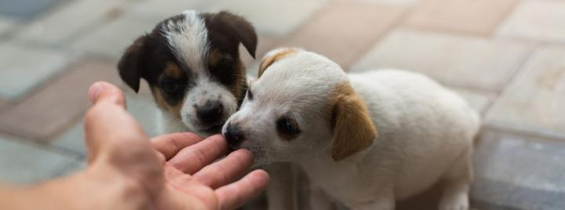
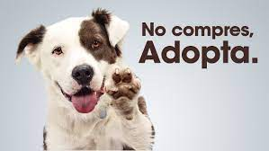

Sobre Nosotros


Nuevo hogar es una organización sin fines de lucro, con la finalidad de buscar eso precisamente un HOGAR, para perros que carezcan de uno. Siempre velando por el bienestar de los perritos.
NUESTRA MISION
Nuestra misión consiste en rescatar a los animales que requieran ayuda, para luego buscarles un hogar apropiado, buscando a personas dispuestas a adoptarlos y que se encuentren en un ambiente donde sean tratados de la mejor manera posible.